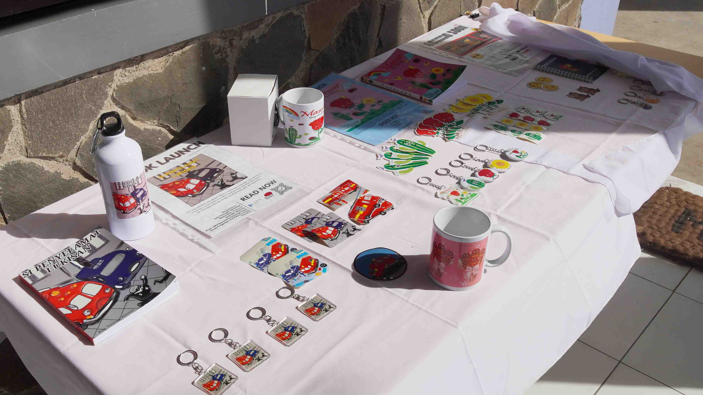
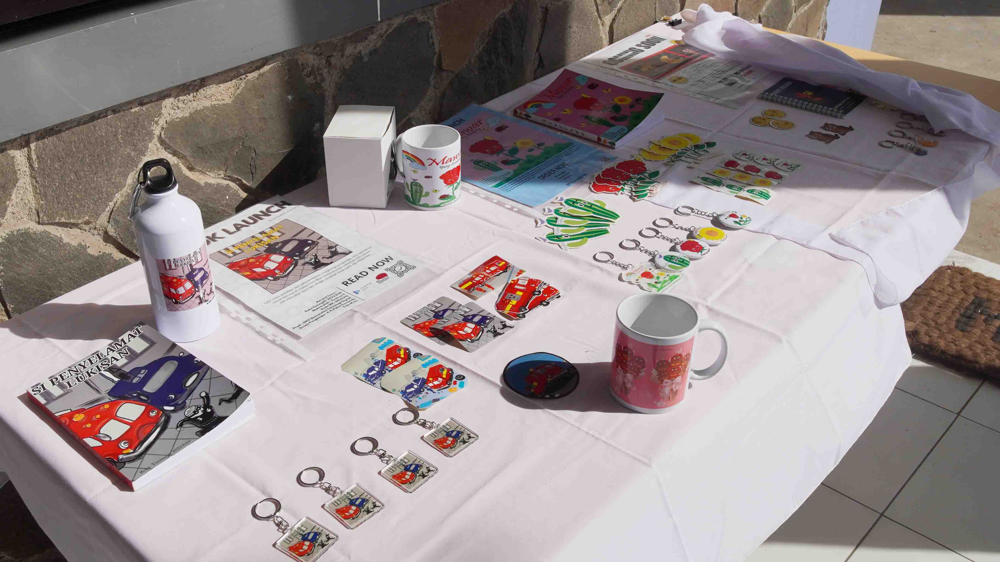

" Rona Visual - Pameran Hasil Studi Mahasiswa DKV Universitas Teknologi Digital "
Pameran Hasil Studi Mahasiswa Desain Komunikasi Visual (DKV) Universitas Teknologi Digital merupakan ajang apresiasi terhadap kreativitas dan dedikasi para mahasiswa dalam menempuh proses pembelajaran di bidang desain. Melalui pameran ini, mahasiswa menampilkan karya-karya unggulan yang dihasilkan dari berbagai mata kuliah, mulai dari desain grafis, ilustrasi, tipografi, fotografi, hingga perancangan media interaktif. Kegiatan ini menjadi bukti nyata bahwa proses akademik di Universitas Teknologi Digital tidak hanya berbasis teori, tetapi juga menghasilkan produk visual yang aplikatif dan komunikatif.
Setiap karya yang ditampilkan merupakan hasil dari riset, observasi, serta eksplorasi ide yang matang. Mahasiswa DKV Universitas Teknologi Digital tidak hanya dituntut untuk menghasilkan karya yang estetis, tetapi juga mampu menyampaikan pesan yang tepat dan relevan dengan konteks sosial, budaya, dan teknologi saat ini. Pameran ini sekaligus mencerminkan perkembangan pola pikir kreatif dan kemampuan problem-solving mahasiswa dalam menjawab tantangan visual komunikasi secara profesional.
Selain menjadi media ekspresi dan pengembangan diri, pameran ini juga memberikan pengalaman nyata kepada mahasiswa untuk mempresentasikan hasil karyanya di hadapan publik. Interaksi antara pengunjung dan peserta pameran, mulai dari sesama mahasiswa, dosen, alumni, hingga praktisi industri kreatif, diharapkan dapat membuka ruang dialog dan kritik konstruktif. Dengan begitu, mahasiswa Universitas Teknologi Digital terdorong untuk terus meningkatkan kualitas karya di masa mendatang serta memperluas jejaring profesionalnya.
Dengan diselenggarakannya pameran ini, diharapkan muncul semangat baru dalam menciptakan karya-karya yang tidak hanya menarik secara visual, tetapi juga memiliki makna dan dampak positif bagi masyarakat luas. Pameran Hasil Studi Mahasiswa DKV Universitas Teknologi Digital bukan sekadar acara tahunan, melainkan langkah penting menuju pembentukan desainer muda yang siap berkontribusi di ranah profesional dan berdaya saing global.